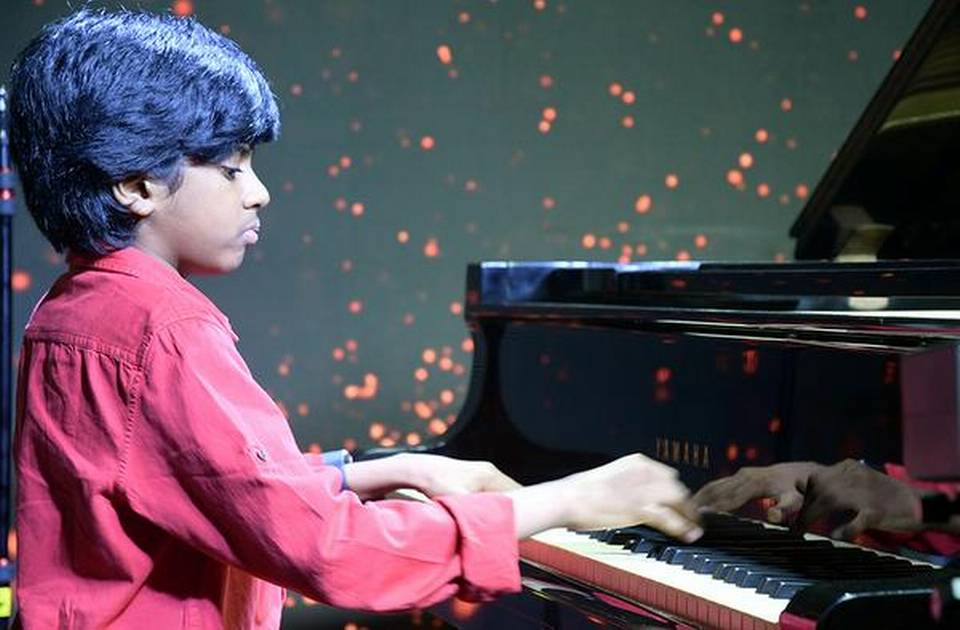
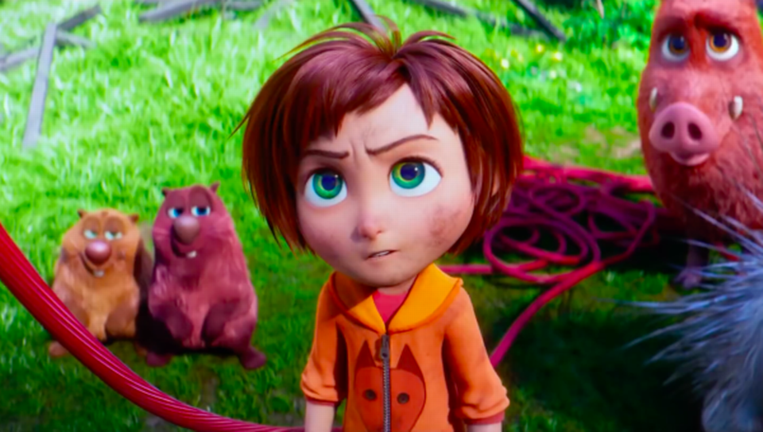

The  News
News

Fred and Giulia miss out on Dancing with the Stars Final
Fred Cooke has said he felt "this silent-yet-warm hug from Ireland" every week on Dancing with the Stars which inspired him to work harder "because I knew people wanted me to succeed". Speaking to RTÉ Entertainment after being eliminated in Sunday's semi-final, the comedian and his professional dance partner Giulia Dotta reflected on their time in the dancing competition. "This man couldn't have done anything more than he's done in the past 11 weeks, every week he just did the best, taking everything on board that the judges were saying, that I was saying and he possibly is the one that improved the most", Giulia said.
Chennai prodigy Lydian Nadhaswaram is ‘The World’s Best
The 13-year-old, who has spent time at Rahman’s music school, gets to take home a prize of $1 million As his fingers flew over the keys, it became clear that Lydian Nadhaswaram, the 13-year-old child prodigy from Chennai, was the favourite to win ‘The World’s Best’ global talent contest. On Thursday Lydian was declared the winner, taking home $1 million in prize money. The Chennai youngster, who spent four years at maestro A.R. Rahman’s KM Music Conservatory and is now tutored by his father Varshan Satish, stunned the judges at the contest by playing 280 beats per minute. He then increased his speed to 325 beats per minute. “This is genuinely one of the best things I’ve ever seen live,” tweeted James Corden, host of the show. Lydian also featured on the Ellen DeGeneres show last week after his appearance on the ‘The World’s Best’ contest. The teenager, who is home schooled, told The Hindu that he spends on an average of six hours a day practising music under the guidance of his father Varshan Satish, a music director.
Richard E Grant on seeing famous faces at the Oscars
Actor Richard E Grant revealed on the Ray D'Arcy Show last night that he met everybody he wished to meet at the recent Oscar ceremony. "It's like Madame Tussauds come to life, " he quipped. "You see all these people except they're not waxworks - although actually some people do look like that, " he said, miming a face-lift. "And they smile from every direction. "But you see people that I've admired all my life.. all in the same place, and everybody is very friendly because at that point nobody knows whether you've lost yet. The majority of people don't go home with an award. "I felt like it was a "win-win" for me because I met everybody that I wished to meet." The Can You Forgive Me? star recently got a long-delayed reply from Barbara Streisand, following the fan letter he sent to the singer and actress when he was 14. Richard E. Grant was born in Swaziland in 1957, full name Richard Grant Esterhuysen. Notable films which he has starred in include Gosford Park (2001), Withnail & I (1987) and Hudson Hawk (1991). The actor received his first-ever Oscar nomination for Best Supporting Actor in the recent, widely-acclaimed film Can You Ever Forgive Me? Grant told the BBC in January that the nomination was "beyond anything I could have ever hoped or dreamt or imagined."
‘Wonder Park’ review: Existentialism in an amusement park
‘Wonder Park’ is fascinatingly dark for an animated children’s film. It begins by ushering you into an amusement park – a figment of June’s (Brianna Denski) imagination – setting the tone for a presumably silly Hollywood film. But suddenly, at an early point in the narrative, June discovers that her mother has a serious ailment, making her mentally and emotionally grow up, almost overnight. Now, she is a hypochondriac on her father’s behalf and abandons her childhood fantasy world to fill in her mother’s shoes. We’ve all been where June is – a personal crisis that adds years to our age. But this unexpected Pixar-like profundity is quickly infused with some inexplicable magical realism where June accidentally enters her own imaginary park. The film opens a tiny window to solipsism but quickly shuts it. Sadly, from there on, only silliness ensues.
Irish writer Catherine Ryan Howard signs 'major six-figure' US book deal
Irish crime author Catherine Ryan Howard has signed a "major six-figure deal" for her next six books from US publisher Blackstone. Publishers Weekly first reported that Blackstone picked up the North American rights to six new titles from Howard to be published in print, audio and e-book formats. The Cork-born author took to Twitter to confirm the news, writing: "It hasn't even sunk in here yet, but I've signed a new deal with Blackstone, my North American publishers, for six more books. "Yes, SIX. *gulp*" She continued: "That means 8 more novels are coming including #RewindBook, and I've 7 of those yet to write. *bigger gulp* "So, like, if anybody's got any spare plot ideas they're not using...?", Howard added jokingly.